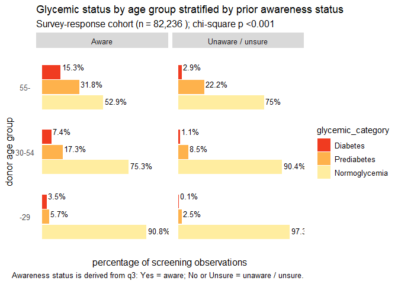
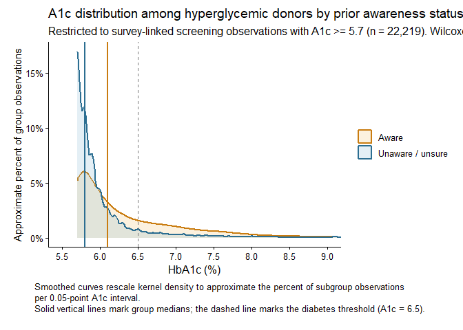
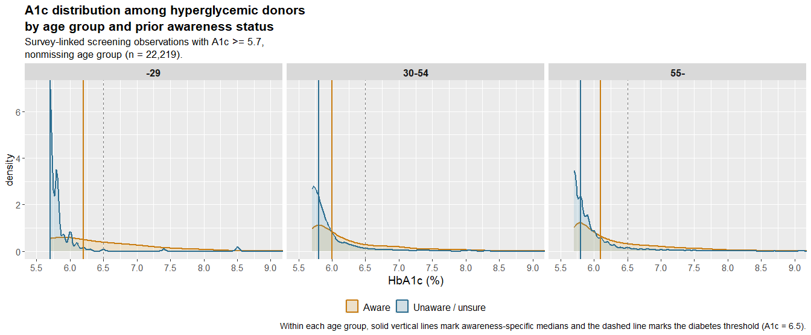
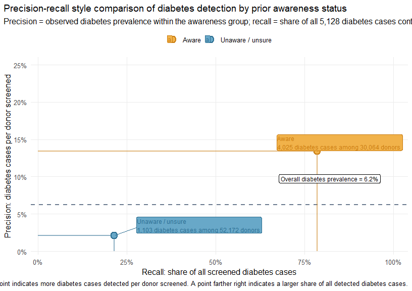
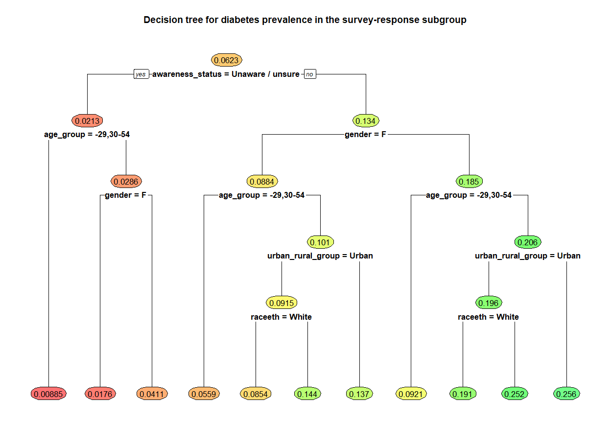
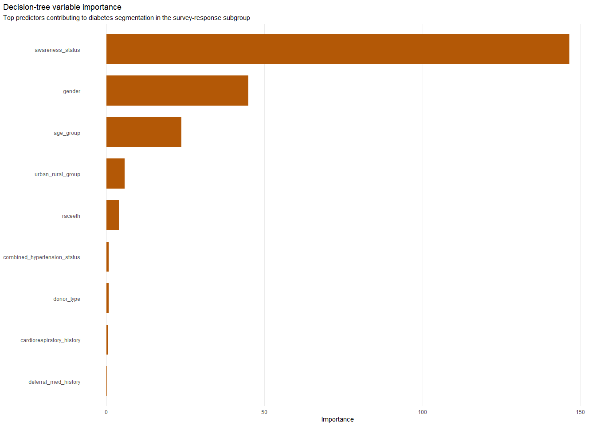
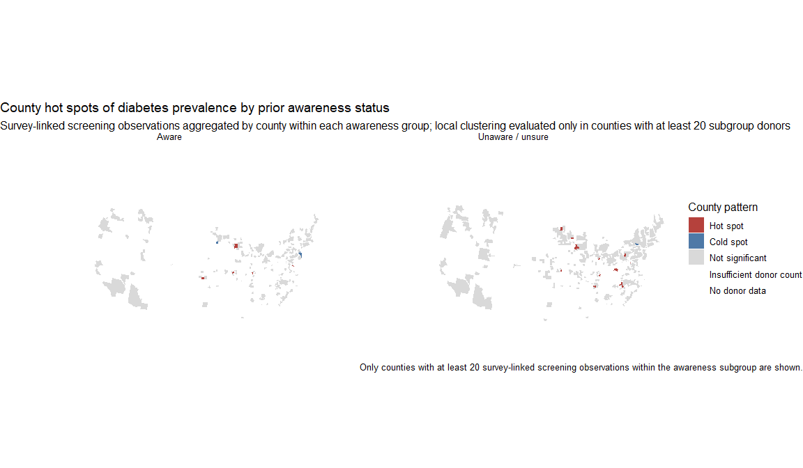

This analysis uses the linked survey-response dataset
survey_a1c_demo as the cross-sectional analytic cohort.
Because the survey-linked file contains 82,236 screening observations
rather than one record per unique donor, the donor-characteristics,
glycemic-category, decision-tree, and geographic analyses are reported
for the survey-linked screening subset directly. Prior awareness was
defined from q3_prior_a1c_awareness, with Yes
classified as aware and No or Unsure
classified as unaware or unsure. The disease-progression tab restricts
the full longitudinal donor file to donors who appear in this
survey-response subgroup and then summarizes repeated HbA1c transitions
after stratifying donors by their survey-derived awareness group. Donors
with mixed awareness responses across survey-linked records are excluded
from the repeat-donor awareness-stratified model.
This table summarizes the survey-response subgroup by prior awareness status.
| Characteristic | Aware N = 30,064 |
Unaware / unsure N = 52,172 |
p-value1 |
|---|---|---|---|
| gender, n (%) | <0.001 | ||
| F | 15,838 (53%) | 29,117 (56%) | |
| M | 14,226 (47%) | 23,055 (44%) | |
| Missing | 0 (0%) | 0 (0%) | |
| race/ethnicity, n (%) | |||
| White | 26,626 (89%) | 46,607 (89%) | |
| Black | 1,203 (4.0%) | 1,484 (2.8%) | |
| Hispanic Origin | 801 (2.7%) | 1,839 (3.5%) | |
| Asian/AIAN/other | 1,434 (4.8%) | 2,242 (4.3%) | |
| Missing | 0 (0%) | 0 (0%) | |
| age, Median (Q1, Q3) | 65 (55, 71) | 61 (46, 69) | <0.001 |
| age group, n (%) | |||
| -29 | 685 (2.3%) | 5,479 (11%) | |
| 30-54 | 6,263 (21%) | 13,696 (26%) | |
| 55- | 23,116 (77%) | 32,997 (63%) | |
| Missing | 0 (0%) | 0 (0%) | |
| first-time donor, n (%) | <0.001 | ||
| N | 29,455 (98%) | 49,980 (96%) | |
| Y | 609 (2.0%) | 2,192 (4.2%) | |
| Missing | 0 (0%) | 0 (0%) | |
| glycemic status, n (%) | |||
| Normoglycemia | 17,563 (58%) | 42,454 (81%) | |
| Prediabetes | 8,476 (28%) | 8,615 (17%) | |
| Diabetes | 4,025 (13%) | 1,103 (2.1%) | |
| Missing | 0 (0%) | 0 (0%) | |
| hemoglobin%, Median (Q1, Q3) | 13.90 (13.20, 14.80) | 13.90 (13.10, 14.80) | 0.8 |
| SBP, Median (Q1, Q3) | 131 (120, 143) | 129 (118, 140) | <0.001 |
| DBP, Median (Q1, Q3) | 76 (69, 83) | 76 (69, 83) | <0.001 |
| BP range, n (%) | |||
| Normal | 6,376 (21%) | 13,756 (26%) | |
| Elevated | 4,953 (16%) | 8,795 (17%) | |
| Hypertension stage 1 | 8,546 (28%) | 14,179 (27%) | |
| Hypertension stage 2 | 10,147 (34%) | 15,370 (29%) | |
| Hypertensive crisis | 42 (0.1%) | 71 (0.1%) | |
| Missing | 0 (0%) | 1 (<0.1%) | |
| Medical History | |||
| cancer, n (%) | 4,053 (13%) | 5,784 (11%) | <0.001 |
| h/o hypertension, n (%) | 120 (0.4%) | 111 (0.2%) | <0.001 |
| heart/lung condition, n (%) | 2,610 (8.7%) | 3,449 (6.6%) | <0.001 |
| coagulopathy, n (%) | 98 (0.3%) | 159 (0.3%) | 0.6 |
| on teratogens, n (%) | 1 (<0.1%) | 2 (<0.1%) | >0.9 |
| on anticoagulants, n (%) | 1 (<0.1%) | 0 (0%) | 0.4 |
| on deferral medications, n (%) | 208 (0.7%) | 213 (0.4%) | <0.001 |
| h/o splenectomy/thrombocytopenia, n (%) | 8 (<0.1%) | 11 (<0.1%) | 0.6 |
| 1 Fisher’s exact test; NA; Wilcoxon rank sum test; Pearson’s Chi-squared test | |||


| Hyperglycemic A1c summary by prior awareness status | ||||||
| Hyperglycemia includes prediabetes and diabetes; Wilcoxon p <0.001; KS p <0.001 | ||||||
| Prior awareness | Hyperglycemic observations | Mean A1c (SD) | Median A1c (IQR) | 90th percentile | Diabetes-range A1c (>=6.5) | A1c >= 7.0 |
|---|---|---|---|---|---|---|
| Aware | 12,501 | 6.41 (0.93) | 6.1 (5.8-6.7) | 7.5 | 32.2% | 19.0% |
| Unaware / unsure | 9,718 | 6.06 (0.76) | 5.8 (5.7-6.0) | 6.5 | 11.4% | 6.5% |
Interpretation. Within the hyperglycemic subgroup, donors who already knew their A1c status had a visibly right-shifted A1c distribution compared with donors who were unaware or unsure. The median A1c was 6.1 in the aware group versus 5.8 in the unaware / unsure group, and the diabetes-range share was 32.2% versus 11.4%. A donor-level sensitivity check that collapsed repeated records to each donor’s median hyperglycemic A1c showed the same 0.20-point median separation, which suggests the difference is not being driven only by repeat observations.

| Hyperglycemic A1c summary by age group and prior awareness status | ||||||
| Age-group Wilcoxon columns compare aware versus unaware / unsure donors within the same age band. | ||||||
| Prior awareness | Hyperglycemic observations | Median A1c (IQR) | Mean A1c | Diabetes-range A1c (>=6.5) | Age-group Wilcoxon shift | Age-group Wilcoxon p |
|---|---|---|---|---|---|---|
| -29 | ||||||
| Aware | 63 | 6.2 (5.8-6.8) | 6.50 | 38.1% | 0.30 | <0.001 |
| Unaware / unsure | 146 | 5.7 (5.7-5.8) | 5.98 | 5.5% | 0.30 | <0.001 |
| 30-54 | ||||||
| Aware | 1,548 | 6.0 (5.8-6.7) | 6.44 | 30.0% | 0.10 | <0.001 |
| Unaware / unsure | 1,314 | 5.8 (5.7-6.0) | 6.11 | 11.3% | 0.10 | <0.001 |
| 55- | ||||||
| Aware | 10,890 | 6.1 (5.8-6.7) | 6.40 | 32.5% | 0.20 | <0.001 |
| Unaware / unsure | 8,258 | 5.8 (5.7-6.0) | 6.05 | 11.5% | 0.20 | <0.001 |
Interpretation. The awareness-related shift toward higher A1c values was present in all three age groups. In donors younger than 30 years, the median A1c was 6.2 in the aware group versus 5.7 in the unaware / unsure group; in donors aged 30-54 years it was 6.0 versus 5.8; and in donors aged 55 years or older it was 6.1 versus 5.8. The largest within-age-group Wilcoxon location shift was observed in the -29 group (0.30 A1c points; p <0.001), although that age band also had the smallest sample size. Across the two older age groups, donors who were already aware of their A1c status still had roughly threefold higher diabetes-range A1c prevalence than donors who were unaware or unsure, which suggests that the right-shifted distribution in aware donors is consistent across adulthood rather than being confined to a single age band.

| Observed diabetes detection yield by prior awareness status | |||||
| Survey-linked donors with nonmissing awareness and glycemic category (n = 82,236) | |||||
| Prior awareness status | Donors screened | Detected diabetes cases | Precision | Recall | Lift vs overall prevalence |
|---|---|---|---|---|---|
| Aware | 30,064 | 4,025 | 13.4% | 78.5% | 2.15x |
| Unaware / unsure | 52,172 | 1,103 | 2.1% | 21.5% | 0.34x |
| Precision is the observed percentage of screened donors with diabetes within each awareness group; recall is the percentage of all detected diabetes cases contributed by that group. | |||||
Among donors who were unaware or unsure of their A1c status before donation, A1c testing still identified 1,103 donors with diabetes among 52,172 screened (precision 2.1%). Although this yield was lower than in donors who were already aware of their A1c status, this subgroup still contributed 21.5% of all detected diabetes cases, supporting the value of A1c testing for uncovering a meaningful burden of potentially unrecognized diabetes.
Most important take-home message from the precision-recall analysis: A1c screening remained clinically useful in donors who were previously unaware or unsure of their A1c status because it identified 1,103 diabetes cases among 52,172 screened donors, contributing 21.5% of all diabetes cases detected in the survey-response cohort.
The survey-response decision tree used 79,898 complete-case screening observations overall and was fit on a random training subset of 50,000 observations. The root-node count shown in the tree is therefore the exact training-sample size, not a rounded value.
| Variable | Importance | Relative importance |
|---|---|---|
| awareness_status | 146.46 | 100.0% |
| gender | 44.94 | 30.7% |
| age_group | 23.79 | 16.2% |
| urban_rural_group | 5.87 | 4.0% |
| raceeth | 4.03 | 2.8% |
| combined_hypertension_status | 0.76 | 0.5% |
| donor_type | 0.70 | 0.5% |
| cardiorespiratory_history | 0.67 | 0.5% |
| deferral_med_history | 0.22 | 0.2% |


Interpretation. The decision tree indicates that
higher diabetes prevalence clustered in the branch defined first by
prior awareness status, with additional separation by age group, gender,
county type, and race/ethnicity. The highest terminal-node prevalence
was 25.9% in Node 21 (1,919 donors; 2.4% of the analytic sample),
corresponding to the rule NA. The predominant profile in
that node was awareness: Aware; age group: 55-; gender: M;
race/ethnicity: White; county type: Rural. The lowest terminal-node
prevalence was 0.8% in Node 3 (18,634 donors; 23.3% of the analytic
sample), corresponding to the rule NA. The predominant
profile in that node was awareness: Unaware / unsure; age group: 30-54;
gender: F; race/ethnicity: White; county type: Urban. Overall, the tree
suggests that the greatest diabetes prevalence occurred in older,
awareness-positive branches, whereas the lowest prevalence was
concentrated in younger or middle-aged donors who were not previously
aware/unsure.

Click a county to view the county, state, diabetes prevalence, and hotspot classification.
| Donor-level awareness status | Repeat donors |
|---|---|
| Aware | 9,681 |
| Unaware / unsure | 16,357 |
| Mixed awareness responses | 277 |
Estimated one-year transition probability matrix for 9,681 repeat donors in the Aware group.
| Current state | Normoglycemia | Prediabetes | Diabetes |
|---|---|---|---|
| Normoglycemia | 0.797 | 0.166 | 0.036 |
| Prediabetes | 0.263 | 0.630 | 0.107 |
| Diabetes | 0.151 | 0.134 | 0.715 |
Estimated one-year transition probability matrix for 16,357 repeat donors in the Unaware / unsure group.
| Current state | Normoglycemia | Prediabetes | Diabetes |
|---|---|---|---|
| Normoglycemia | 0.866 | 0.121 | 0.013 |
| Prediabetes | 0.376 | 0.588 | 0.036 |
| Diabetes | 0.299 | 0.144 | 0.557 |